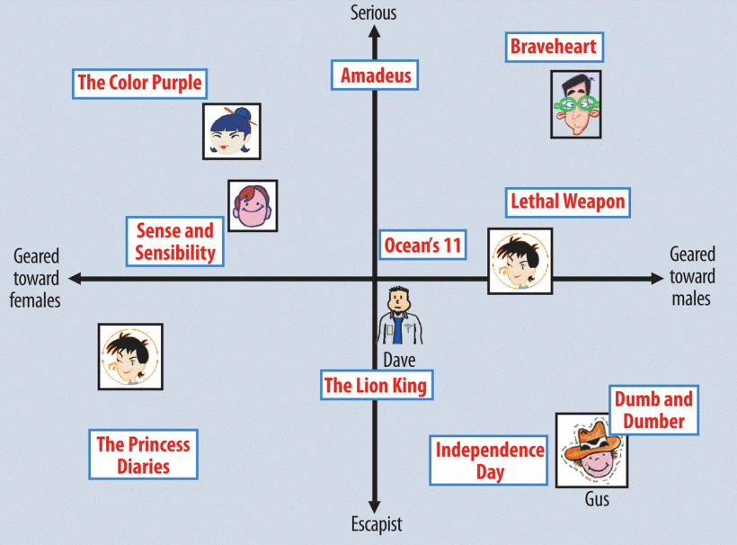
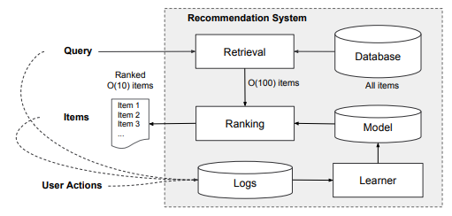

Introduction¶
Computer-based systems provide us with the opportunity of mining user history to reveal trends and personal preferences that they, and those around them, may not have previously realised [Ekstrand et al., 2011]. A vast amount of research has been conducted on how to best recommend content to users and many methods have been proposed [Balabanović and Shoham, 1997, Guttman et al., 1998, Pazzani, 1999].
In this research, we will be focusing on Collaborative Filtering [Su and Khoshgoftaar, 2009, Thorat et al., 2015], an approach that decides what to recommend to a user based on the preferences of similar users [Elahi et al., 2016, Su and Khoshgoftaar, 2009]. Similarity between users is estimated by comparing user-interactions and ratings with products or services [Elahi et al., 2016, Thorat et al., 2015]. The table below highlights some popular services currently using recommender systems.
Service |
Recommendations |
|---|---|
Amazon |
Retail Products |
Facebook (Meta) |
Friends |
Netflix |
Movies / Shows |
Spotify |
Music |
Youtube |
Videos |
Google News |
News |
Recommending something to someone else is a natural process that aims to help somebody sift through a large corpus of information efficiently to find only the items of most interest to them. Recommender systems augment that process, and as such have become a vital tool for information-availability in our increasingly digital lives [Su and Khoshgoftaar, 2009].
In the following Jupyter Book, we will be using data acquired from the HETREC 2011[Cantador et al., 2011] 2nd International Workshop on Information Heterogeneity and Fusion in Recommender Systems. In particular, we will be focusing on the artist listening records dataset published by Last.FM. This dataset consists of 92,800 artists listening records from 1,892 users. We will explore this data in more detail in Preliminary Data Analysis. In the following section, we will discuss in-depth two approaches to Collaborative Filtering, namely; Matrix Factorisation, and Recommendation with Deep Neural Networks.
Collaborative Filtering¶
Collaborative Filtering (CF) was a term first coined by the makers of Tapestry, the first recommender system. CF aims to solve the problem of recommending \(m\) items, by \(n\) users where the data is often represented by a \(n \times m\) matrix [Laishram et al., 2016]. There are two main approaches to CF, neighborhood methods, and latent factor models. The neighborhood methods compute the relationships between users, or alternatively items. Latent Factor models aim to characetrize users and items on many abstract factors infered from the rating patterns. The most successful realisations of latent factor models are based on matrix facotrisation (MF). [Koren et al., 2009]. In this section, we will look at MF more closely, focusing on the aspects we will incorporate during our research.
Matrix Factorisation (MF)¶
In its basic form, MF characterises querys (users) and items by vectors which are inferred from rating patterns. High correspondance between query vector and item vector results in a recommendation. The most useful data from an MF model is explicit feedback. This constitutes explicit input from users regarding interest in items. We refer to this as rating [Koren et al., 2009]. The construction of query and item vectors intends to model user preferences as shown in the figure below.
{kind=link}
As stated previously, in MF, we are given the feedback matrix denoted \(A \in \mathbb{R}^{m \times n}\), where \(m\) is the number of queries and \(n\) is the number of items. We will denote our user vector \(U \in \mathbb{R}^{m \times d}\), and our item vector \(V \in \mathbb{R}^{n \times d}\). We will use the product \(UV^{T}\) as our approximation of \(A\).
Our objective function is then defined as follows: $\( \min _{U \in \mathbb{R}^{m \times d}, V \in \mathbb{R}^{n \times d}}\sum_{(i,j) \in obs} (A_{ij} - \langle U_{i},V_{j} \rangle)^{2} \)$
The two standard approaches to minimizing error in CF are Alternating Least Squares (ALS) [Cichocki and Zdunek, 2007], and Stochaistic Gradient Descent (SGD) [Gemulla et al., 2011]. Weighted Alternating Least Squares (WALS) is a modified version of ALS that is suited to MF. In the literature, it is often cited that WALS is the prefered algorithm for recommender systems. This is because WALS is optimised for parallelization, meaning it is scalable to large scale data. As well as this, ALS performs better than SGD on systems centered on implicit data [Koren et al., 2009]. SGD cannot directly scale to very large data [Gemulla et al., 2011]. Taking our own problem into consideration, either approach is suitable. The recognised benefits of WALS are not of interest to us as parallelization is out of the scope for this research. We have no information regarding intrinsic user data such as age, country, etc. Our dataset is also small enough that the performance of SGD is not severly hindered. Therefore, we will adopt SGD in this approach.
Deep Neural Networks¶
Advances in deep learning-based recommender systems have gained notable traction over the past years. This goes hand-in-hand with the increased adoption of deep learning frameworks in most ML applications. Deep learning can effectively capture nonlinear and nontrivial user-item relationships through complex data abstraction [Zhang et al., 2019].
To develop our own deep neural network recommender, we will employ Tensorflow V2, with an emphasis on the Tensorflow Recommedation Systems (TFRS) package. Tensorflow is developed by Google, the leading experts in recommendation systems. The TFRS package can be used through Keras which is an API built atop Tensorflow. TFRS provides a large volume functions designed spcifically for working with recommender systems.
Google have also authored many publications regarding their philosophy regarding recommender systems for their various applications [Cheng et al., 2016, Covington et al., 2016]. They regularly follow a repeating pattern of developing two seperate ‘Towers’, a user (query) tower, and an item (candidate) tower. Each of these towers can have varying levels of complexity, and can host deep learning embedings. A combined model of the outputs of these seperate towers is then designed as a feed-forward deep network.
Google also regularly advice a two-tier approach to recommender systems. That is: a retrieval model, and a ranking model. Their typical architeture is displayed in the image below, which has been abstracted from [Cheng et al., 2016]
{kind=link}
The TFRS package allows for the easy creation of recommender models by following simple steps. Firstly, one must inheret from the base tfrs.Model class, which is packaged with many utility functions. We build our objective function (denoted as the task) on top of this class. Using different objective functions is simply a case of swapping out a single line of code. In our examples, we will make use of the Adaptive Gradient Algorithm (Adagrad), which is an SGD optimiser. It works by maintaining low learning rates (usually denoted \(\alpha \)) for frequently occuring features, and high learning rates for less frequent features. Where we can, we will use Root Mean Squared Error (RMSE) as our metric for model comparison.